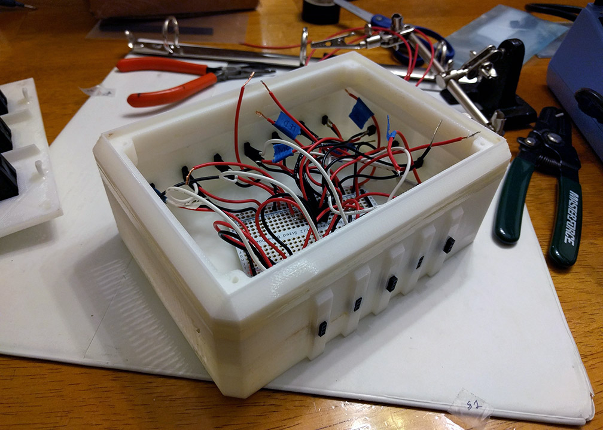
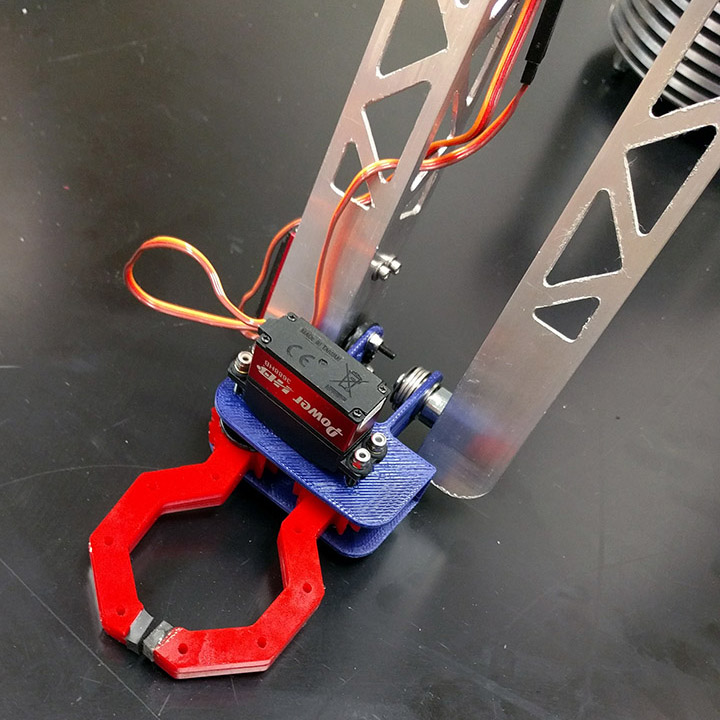
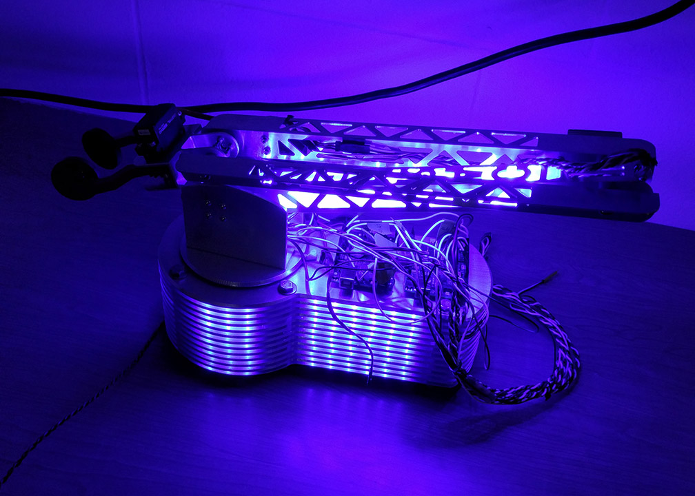

I built this robot arm with Jarod Throckmorton for the Carmel High School Science Olympiad team. The task was to move various objects (pencils, dice, ping-pong balls, and Lego bricks) into several target areas as quickly as possible. Due to the flexibility required of the arm, we realized that the final device would have too many actuators to control individually and efficiently. Therefore, we settled on a leader-follower approach in which the motions performed on a small version of the arm are mirrored on the main arm.
The device was controlled using two Arduino Uno boards. The positions on the leader arm were encoded with potentiometers and were transmitted to the Arduino which would then mirror the actions on the servos controlling the follower arm. The use of two Arduinos was not strictly necessary, but the parallel processing improved the responsiveness of the device.
The leader arm is constructed out of stacked layers of basewood that were lasercut and then glued together. The follower arm was milled out of aluminum on a CNC machine and has a similar stacked-layer construction.
We used PowerHD high-torque digital servos from Pololu in several different torque ratings with the largest servos (Power HD-1235MG) being used to control the rotation of the arm and the first pivot at the base of the arm. Smaller servos were used farther along the arm.
The gripper is made up of laser-cut acrylic stacked and glued together. It is mounted to a 3D printed housing and has rubber pads on the ends to assist with gripping. The ends turned out to be too small to grab the ping pong balls reliably, so we large disks of acrylic padded with rubber were attached to the fingers with epoxy.
The robot arm won eighth place out of 60 teams at the 2016 National Science Olympiad tournament with a perfect score.
{kind=link}
{kind=link}
{kind=link}
{kind=link}
{kind=link}
{kind=link}